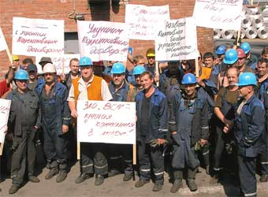
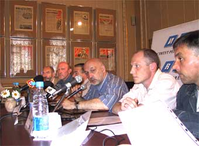
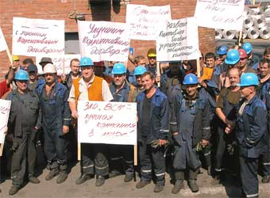
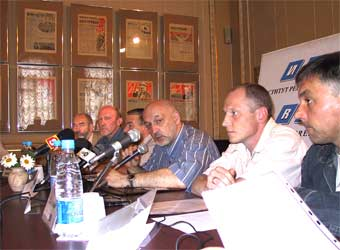

|  |  |
 |
|  | |
 |
|
НАУЧНО-ПРАКТИЧЕСКАЯ КОНСУЛЬТАЦИЯСПЕЦИАЛИСТА ФОНДА РАБОЧЕЙ АКАДЕМИИ
|
Соглашение о солидарных действиях профсоюзных организаций
|
4 апреля 2006 года г. Москва
Членам Российского профсоюза докеров
Морского порта Санкт-Петербург
От имени Исполкома РПД и от себя лично сердечно поздравляю Вас — членов Российского профсоюза докеров с пятнадцатилетием создания профсоюзной организации докеров в Ленинградском морском торговом порту.
Отрадно, что традиции докерского братства и солидарности, заложенные в начале создания нашего профсоюза развиваются, крепнут и приумножаются. Профсоюзная организация докеров Морского порта С-Петербург внесла значительный вклад в развитие и становление докерских профорганизаций в портах нашей Родины.
Ваша докерская организация является важной составляющей не только Российского профсоюза докеров, но и неотъемлемой частью и всего нового, свободного профсоюзного движения в России.
Высокий уровень подготовки специалистов Портового комитета позволяет оказывать неоценимую помощь и консультации многим нашим братьям в других организациях.
Впереди немало новых сложных задач. Уверен, что общими усилиями мы преодолеем трудности и добьемся реализации стоящих перед каждой организацией и всем профсоюзом целей и задач.
Залог тому — наш опыт, ответственность, энтузиазм и преданность делу, стремление вывести нашу организацию на уровень, достойный такой великой морской державы, как Россия.
От всей души желаю всем Вам, ветеранам нашего профсоюзного движения, всем Вашим родным и близким счастья и благополучия, успехов в труде и личной жизни.
Председатель РПД
А.Н. Шепель
|
Портовый комитет РПД Дорогие товарищи! Фонд Рабочей Академии поздравляет портовую организацию Российского профсоюза докеров с достижением возраста, близкого к совершеннолетию. За эти 15 лет вы сделали столько по защите интересов работников, что не под силу иным организациям столетнего возраста. Вы освоили науку грамотной, с использованием спецсредств (газеты и брошюры) экономической и политической борьбы. Желаем вам и в дальнейшем ориентации на перспективу, тщательной обдуманности намечаемых коллективных действий, сплоченности и солидарности. Фонд Рабочей Академии высоко оценивает вашу деятельность и готов вместе с вами служить тем, кто работает в трюме. президент Фонда |
Портовой организации Дорогие товарищи! Российский комитет рабочих поздравляет вас с 15-летием основания профсоюзной организации, показывающей пример грамотной, упорной, целенаправленной борьбы за права и интересы работников. Ваш опыт, распространенный рабочей печатью, стал достоянием рабочего, профсоюзного движения России. Желаем и впредь идти в авангарде коллективной борьбы за улучшение жизни рабочего класса. Сопредседатель Сопредседатель |
|
Фонд Рабочей Академии поздравляет первичную профсоюзную организацию Российского профсоюза докеров и коллективы стивидорных компаний с успешным завершением самого длительного в постперестроечной России коллективного трудового спора, в результате которого перезаключены коллективные договоры и осуществлена индексация заработной платы работников. Желаем дальнейшей плодотворной работы. Совет Фонда Рабочей Академии |
А.Н.Моисеенко, председатель Портового комитета
Российского профсоюза докеров морского порта Санкт-Петербурга,
первый заместитель председателя Российского профсоюза докеров
Хотя речь в данном материале идёт о решении проблемы перезаключения коллективных договоров непосредственно в 2005 году, подготовительная работа нами началась значительно раньше...
Конференция Портовой организации Российского профсоюза докеров морского порта Санкт-Петербурга поздравляет работников и руководство ЗАО «Первая стивидорная компания», ЗАО «Вторая стивидорная компания», ЗАО «Первый контейнерный терминал», ЗАО «Нева-Металл» и ЗАО «Четвертая стивидорная компания» с перезаключением в текущем году коллективных договоров как основы социального партнерства.
2 ноября 2005 г.
14 сентября подписаны Соглашения, предусматривающие перезаключение на новый срок коллективных договоров в стивидорных компаниях группы ОАО «Морпорт СПб» в объеме прежде действовавших договоров, с некоторыми уступками со стороны профсоюза и подвижками со стороны работодателей. Тем самым снято основное разногласие в трудовом споре, длящемся в Санкт-Петербургском порту с 30 июня текущего года.
Заключенные Соглашения утверждены конференциями работников стивидорных компаний, которые состоялись 21 сентября.
Забасткомы приняли решение о приостановке забастовки и опубликовали соответствующее обращение к работникам. Докеры ПерСтиКо, ВСК и ЧСК приступили к полномасштабной работе.
Тем временем продолжается согласование проектов Положения «О порядке повышения уровня реального содержания заработной платы Работников Организации», Положения «О премировании Работников за основные результаты хозяйственной деятельности Организации» и Соглашения «Об обеспечении условий деятельности Представителя Работников — Портовой организации Российского профсоюза докеров морского порта Санкт-Петербурга».
По договоренности сторон переговоры по ним могут продлиться до конца 2005 года. При позитивном результате переговоров профсоюз обязался прекратить приостановленную забастовку. В случае же, если работодатели не сумеют обеспечить согласование с представителями работников необходимых нормативных актов, то работники будут вправе вновь прибегнуть к полному либо частичному прекращению работы.
По мере того, как углубляется конфликт в принадлежащих олигарху Владимиру Лисину стивидорных компаниях группы ОАО «Морпорт СПб»...

Уважаемый Владимир Владимирович!
Обратиться к Вам нас заставило беспокойство за судьбу Северо-Западных ворот России...
Желаем вам и в дальнейшем ориентации на перспективу, тщательной обдуманности намечаемых коллективных действий, сплоченности и солидарности.
Фонд Рабочей Академии высоко оценивает вашу деятельность и готов вместе с вами служить тем, кто работает в трюме.
президент Фонда
Рабочей Академии М.В.Попов
Портовой организации
Российского профсоюза докеров
морского порта Санкт-Петербурга
Дорогие товарищи!
Российский комитет рабочих поздравляет вас с 15-летием основания профсоюзной организации, показывающей пример грамотной, упорной, целенаправленной борьбы за права и интересы работников. Ваш опыт, распространенный рабочей печатью, стал достоянием рабочего, профсоюзного движения России.
Желаем и впредь идти в авангарде коллективной борьбы за улучшение жизни рабочего класса.
Сопредседатель
Российского комитета рабочих,
регулировщик радиоаппаратуры
завода В«Рлектромаш»
В.М.Кудрявцев
Сопредседатель
Российского комитета рабочих,
наладчик автоматических линий
РђРњРћ «ЗР